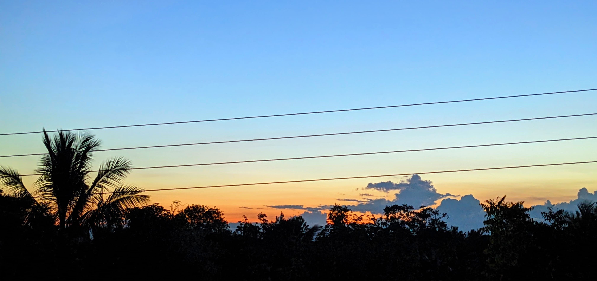

Greetings from Green Purage, your one-stop shop for adopting sustainable solutions and battling environmental degradation. Located in the centre of Hambantota's Premier Recycling Hub, our platform serves as a ray of hope for anybody hoping to significantly improve the state of our world. Green Purage is of the opinion that every effort matters in the battle against pollution. Our commitment is to enabling people and communities to participate in the shift towards a more environmentally friendly and cleaner future. We achieve this by promoting creative solutions and educating ourselves about the effects of the decisions we make on a daily basis. Come along on this adventure as we investigate the urgent problems associated with environmental degradation and identify practical solutions to lessen its consequences. Let's work together to create a more sustainable future, beginning in our own backyard.